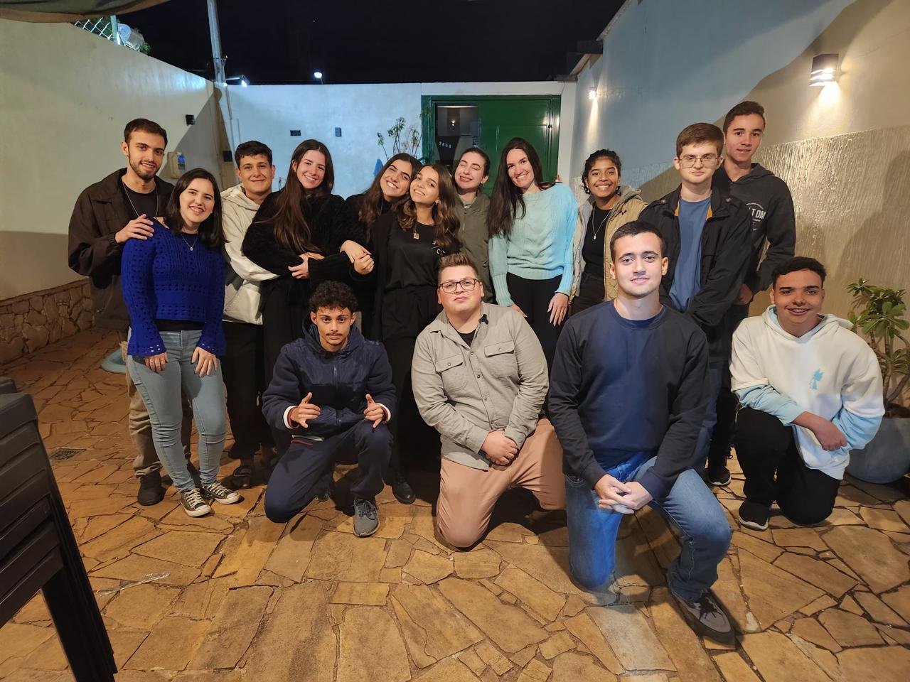
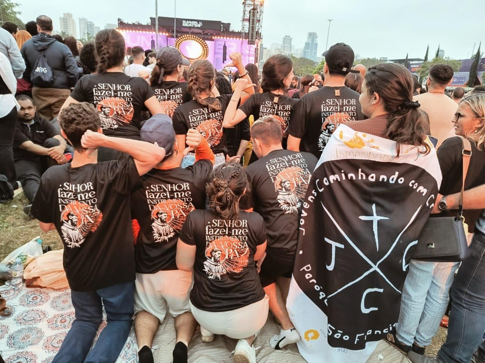
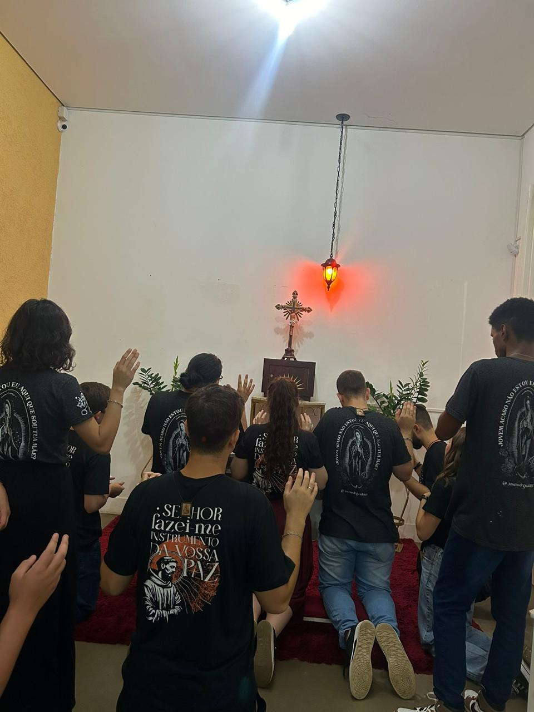
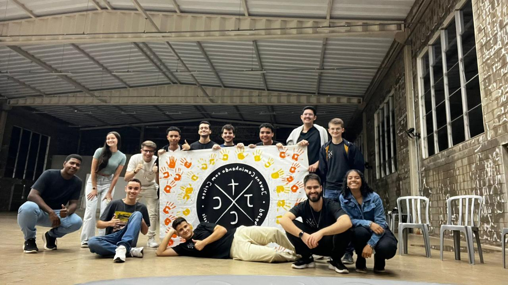
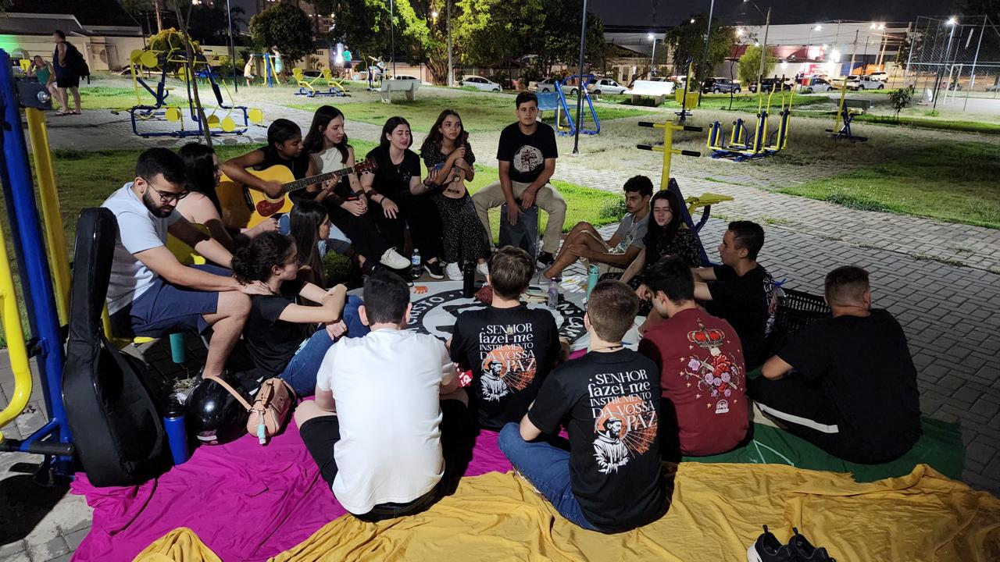
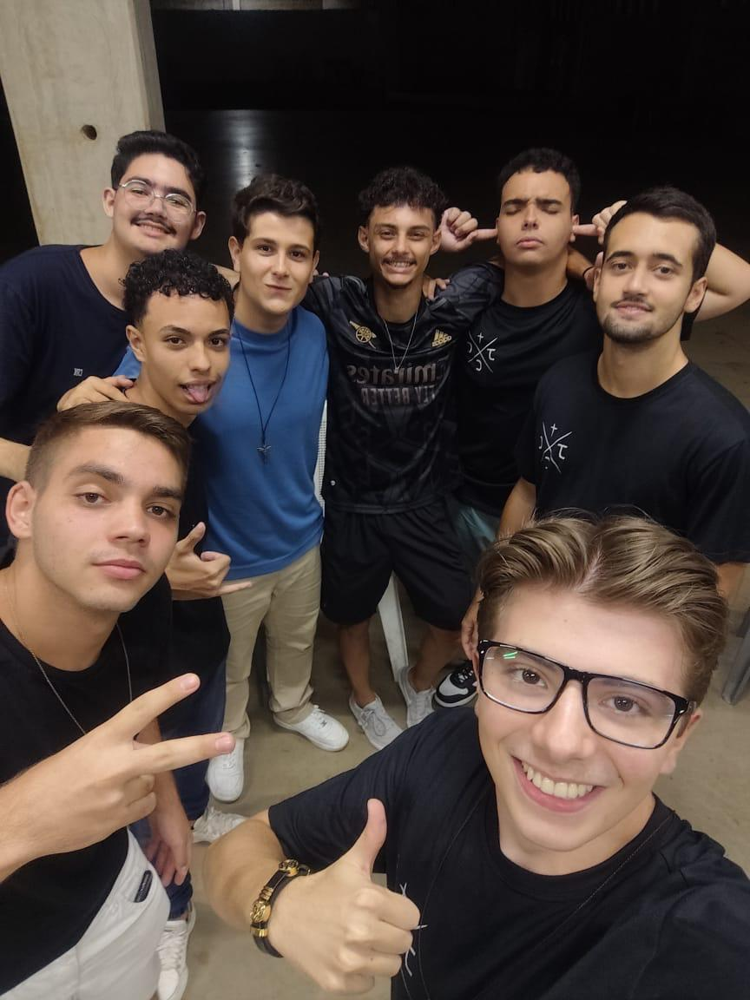
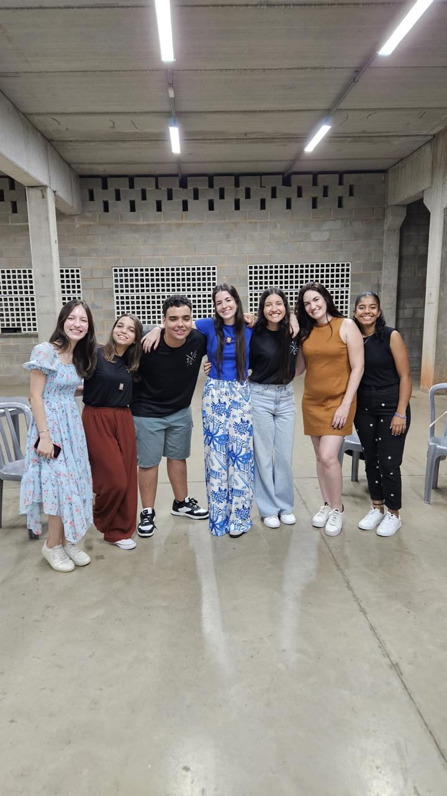
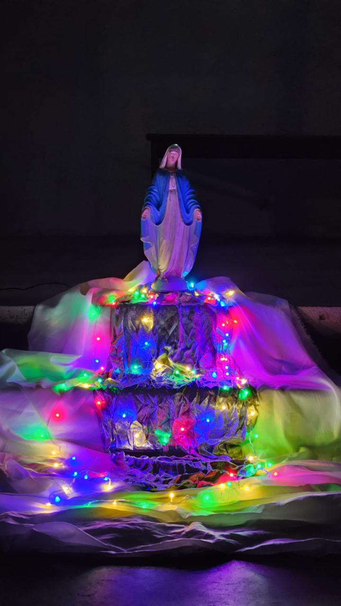

Encontro feito em uma chácara
Encontro que reuniu nossos jovens para um momento de adoração e entrega à Jesus, em um ambiente natural e acolhedor.
Summer Beats 2024
Nossos jovens marcaram presença no evento Summer Beats de 2024, representando nosso grupo e compartilhando a mensagem de amor e esperança de Jesus em um momento de adoração e oração com várias celebridas Católicas famosas.
Grupão na Paróquia São Camilo de Lélis
Noite especial para nossos jovens que foram ao grupão realizado na Paróquia São Camilo de Lélis, diante do Santissímo Sacramento em prol de muita oração, entrega a Deus e muita adoração com música, juntamente também com nossos irmãos do grupo de jovens da Paróquia Nossa Senhora de Guadalupe.
Encontro no Salão Paroquial
Encontro normal feito no Salão Paroquial, assim geralmente são realizados nossos encontros com nossos jovens, com dinâmicas, debates, adoração, reflexão e etc.
Luau na Praça do São Judas
Noite de luau com muitos cantos e adoração, com o objetivo de louvar o Senhor Deus por tudo que tem feito na vida de nossos jovens, sendo assim uma noite linda e agradável.
Encontro sobre os Santos e Comemoração de Aniversário de nosso jovem
Um encontro abençoado por Deus, onde falamos sobre os santos e preenchemos em grupinhos a ficha deles, refletindo a história de cada um. Após isso, uma surpresa de Aniversário pro nosso jovem João Victor, com bolo e salgados.
 Encontro Mariano
Realizado com o objetivo de termos um momento com nossa mãezinha do céu, pedindo sua intercessão pra nossa vida e agradecendo-a.
